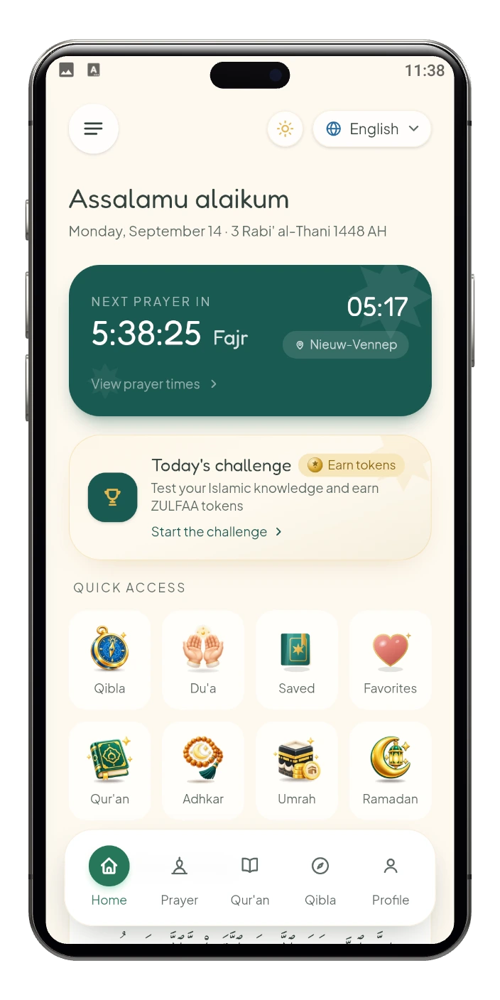
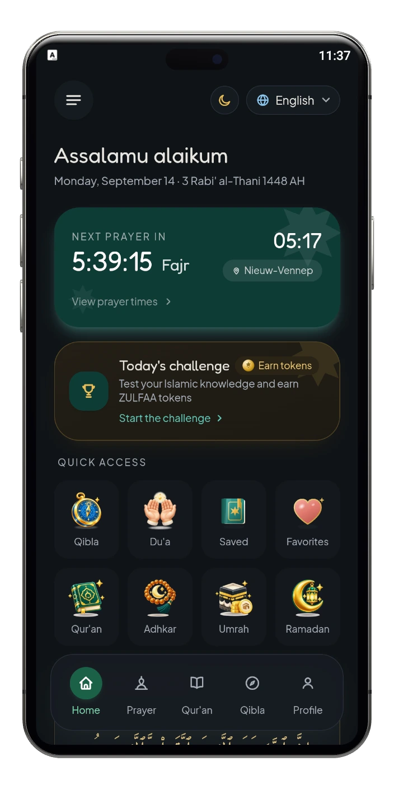

The Noble Qur’an
Read the full Uthmani text with an English translation, right inside the app.
- Bookmarks and your reading progress
- Recitation from a choice of reciters
- Tafsir loads when you open it
زُلْفَى
Prayer times, the Qur'an, adhkar and the qibla, calculated on your own phone and working offline.
No advertising. No analytics. No tracking code.


ZULFAA is an Islamic app bringing together accurate prayer times, the Qur'an, adhkar and du'as, and qibla direction in one calm, elegant experience. It works on your device first, and most of it works offline.
Eight shortcuts sit on ZULFAA’s home screen. Choose one to see what it opens.
Read the full Uthmani text with an English translation, right inside the app.
Morning and evening adhkar from Hisn al-Muslim, with a daily wird to keep.
Du’as gathered by theme, with translation and audio.
The direction of the Ka’bah and your distance from it, worked out on your device.
Coming in a future update. Not part of the first release.
Each day of Ramadan at a glance: Suhoor and Iftar from your prayer times, a countdown and five acts of worship.
Coming in a future update. Not part of the first release.
Set a savings goal for Umrah and see what you have put aside, what remains and how many days are left.
Mark the verses, du’as and adhkar you love with a heart, and find them together.
Bookmark a verse, du’a or dhikr to come back to it. Everything you bookmark waits on one page.
Around them on the home screen: prayer times and reminders calculated on your phone, and an optional daily challenge.
Inside the app
ZULFAA on Android — the Qur'an, the qibla, adhkar, the daily challenge and more, shown in the theme you choose for this site.

Home

Prayer times

The Noble Qur'an

Reading & listening

Verse options

Qibla

Adhkar & Du'a

Daily Challenge

Challenge questions

Ramadan Planner

Umrah Savings

Savings goal

Notifications

Your personal space

Menu

Help & Support
01 / 16 · Home
Swipe, drag or use the arrows — the arrow keys work too.
Local first
ZULFAA works from your device outward. What it knows about you, it keeps there.
The Qur'an and the adhkar travel with the app, and prayer times and the qibla are calculated on your phone rather than fetched.
Saved items, favourites, reading progress and your adhkar count stay on the device. The app asks for no real name, email address, phone number or date of birth.
No advertising, no analytics, no tracking code — in the app and on this website.
Recitation audio, tafsir and the optional daily challenge load only when you open them.
Contact
A question, a correction, or something that behaved oddly on your phone — this reaches the developer directly.
The form isn’t available right now, but you can write to us from your own email app.